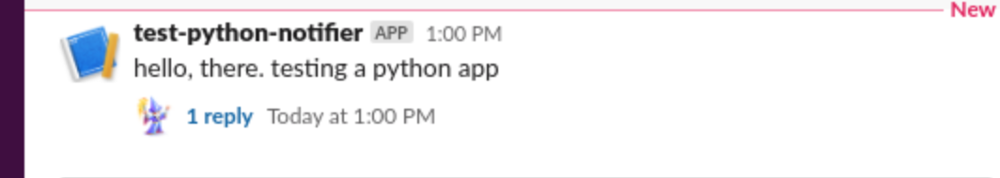
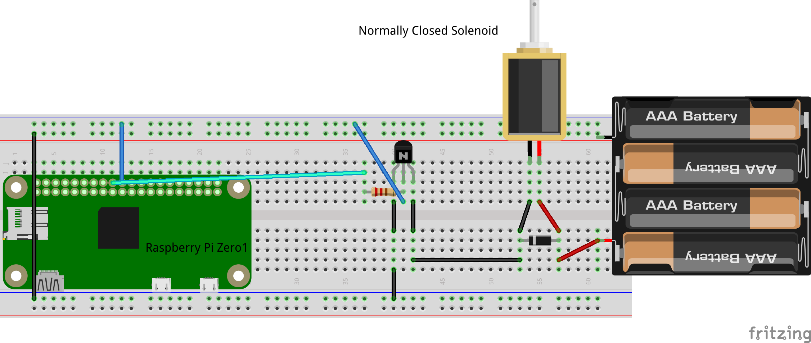
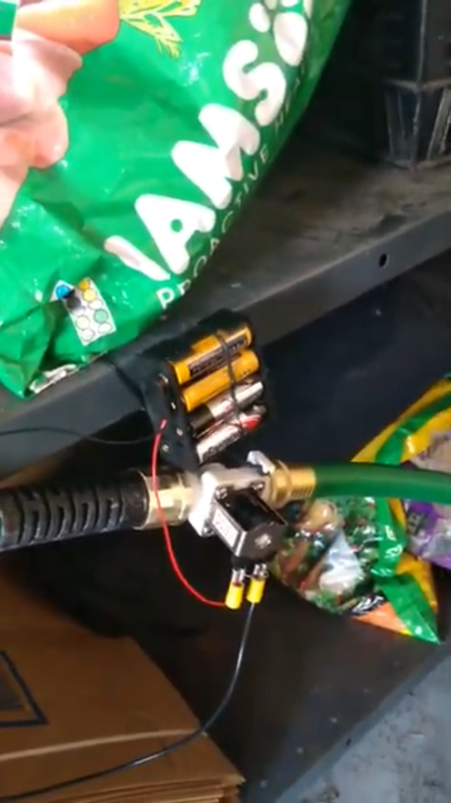
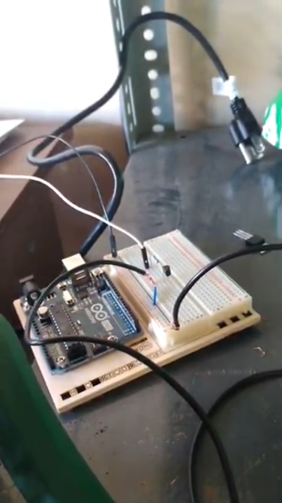
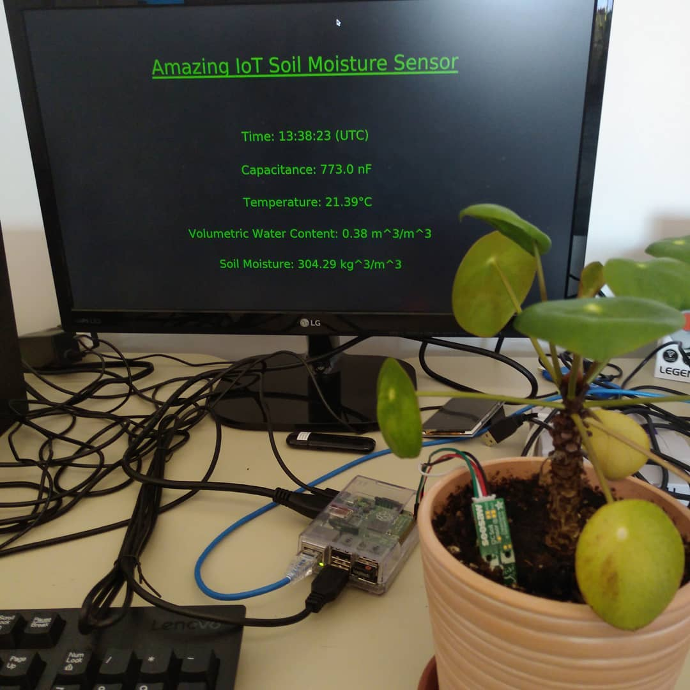
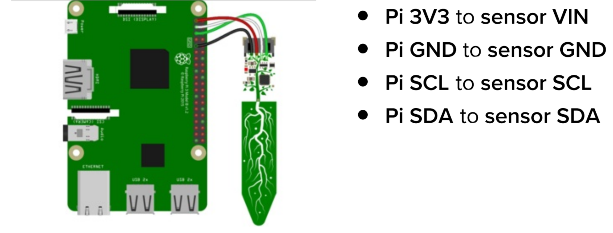

class: center, middle, # .blue[Python 3 for Linux Users] ### .blue[Kitchener-Waterloo Linux Users Group] ### .blue[December 7, 2020] ## Derek Steinmoeller ### Senior Developer @ Aquanty Inc. --- # .blue[Presentation Overview] ## Quick intro to Python 3 (syntax, execution, etc.) ## Scripting example: The Slack Notifier. ## Raspberry Pi (scripting/app) examples: <ul style="font-size: xx-large;"> <li>The Hose 'on/off' switch.</li> <li>The Soil sensor, with minimalist dashboard (tkinter).</li> </ul> ## Wrap-up --- # .blue[Why Python?] ### • Powerful and cross-platform modern scripting language <br/>(not a *nix-shell). ### • Little overhead to get functional code up and running. ### • Many open-source modules available for specific tasks. ### • Graphics/Simple UI frameworks at your fingertips. --- # .blue[Python 2 or 3? Some history] ### • Python 2 released in 2000, Python 3 in 2008. ### • Certain syntactic/functional differences and breaking changes between the two meant some modules 'held back' at V2. ### • Support dropped for Python 2 last year, but it remains distributed as a legacy component of, for example, some linux desktops (Ubuntu w/ Gnome 3). ### • Generally, it is agreed that Python 3 is an improvement over Py2, and Py2 is used only for legacy reasons (not new projects!) ### • The Python project maintainers have stressed that there are currently no plans for another breaking version (no "Python 4"). --- # .blue[How to install?] ### • For a "complete" (i.e., lots of modules) installation, consider the Anaconda or Miniconda python 3 distributions. ### • Otherwise, use your distriution's package manager. Also highly recommened to install .red[pip], python's standard package manager. ### • e.g., <pre>sudo apt-get -y install python3.8 python3-pip</pre> Install modules with pip like this: <pre>python3 -m pip install flask</pre> or (short-hand), <pre>pip3 install flask</pre> --- # .blue[Crash course: Syntax] ### • Python has no "begin" or "end" keywords (like Fortran) or braces (like C). ### • Code blocks enforced through *indentation*. ### e.g., a function, <pre> def abs(x): if x < 0: return -x return x </pre> ### • Enforces readable code-style from square one. ### • Whitespace matters: don't mix spaces and tabs! --- # .blue[Syntax: Tuples] ### • Tuples are immutable ordered pairs, triples, ... ,(n-)tuples. ### • Can be used for logical groupings of parameters, or multi-valued return statements. ### • Denoted with beginning/ending parentheses and comma-separated values ### e.g., <pre>my_tuple = (1, 2, 3)</pre> ### or <pre> my_tuple = 1, 2, 3 # same thing (syntactic sugar).</pre> --- # .blue[Syntax: Lists] ### • Lists are growable/shrinkable "arrays" ### • e.g. (interactive shell) <pre> $ python3 >>> my_list = [4, 5, 6] >>> my_list.append(7) >>> print(my_list) [4, 5, 6, 7] >>> my_list.pop() 7 >>> print(my_list) [4, 5, 6] >>> exit() </pre> ### • Note: .red[append] and .red[pop] act on the *back* of the list. --- # .blue[Syntax: Loops] ### Can loop over lists (more generally, *iterables*) with .red[for] keyword. <pre> for item in my_list: print(item) </pre> ### or, <pre> for i in range(len(my_list)): print(my_list[i]) </pre> ### Can also use the .red[while] keyword, when not looping over a collection:<pre> with open("myfile.txt", mode="r") as f: eof = False while (eof != True): line = f.readline().strip() if len(line) != 0: print(line) else eof = True </pre> --- # .blue[Sets and Dictionaries] ### A set is an (unordered) uniquely-valued list. Can convert a list to a set <pre> my_set = set([1, 2, 3]) </pre> ### or define a set outright with braces: <pre> >>> my_set = {1, 2, 3} </pre> Check if a value is in a set with .red[in] keyword: <pre> >>> 1 in my_set # returns True >>> 5 in my_set # returns False </pre> ### A dictionary is a key-value table, with efficient look-ups, similar to a hash-map. <pre> >>> ascii_alphabet = {a: 65, b: 66, c: 67, d: 68 ...} >>> ascii_alphabet['a'] # returns 65 </pre> --- # .blue[FAQ: How do I run my python script?] ### From command-line, run: <pre> $ python3 my_script.py </pre> or write an executable shell-script (wrapper) <pre> #!/bin/bash /usr/bin/python3 /path/to/my_script.py ... $ chmod +x my_wrapper $ ./my_wrapper </pre> Can also make the python script itself executable: <pre> #!/usr/bin/python3 print("hello, world!") ... $ chmod +x hello.py $ ./hello.py </pre> --- # .blue[FAQ 2: What editor do you/should I use?] ### Use whatever you want. ### Some just use .red[vim], .red[nano], .red[emacs], .red[gedit], etc. ### More seasoned developers who need advanced features like debuggers, etc., use full-featured IDEs like .red[vscode] or .red[PyCharm] (based on IntelliJ). ### Use what you're most used to, there are no hard restrictions! --- # .blue[Case Study: The Slack Notifier] Exercise: Write a simple program for sending slack messages to a given chat channel prescribed by some application-specific auth keys. <pre> import sys import requests import json slack_webhook_url = "https://hooks.slack.com/services/put/keys/here" message = " ".join(sys\.argv[1:]) resp = requests.post(slack_webhook_url, data=json.dumps({"text": message}), headers={ "Content-Type": "application/json", "Accept": "application/json" }) if resp.status_code != 200: print(f"Message not sent. Response code is: {resp.status_code}") print(resp.text) else: print("Message sent!") print(resp.text) </pre> --- # .blue[Slack Notifier: In practice] ### Note: Need to install .red[requests] and .red[json] with, e.g., .green[pip install json]. ### Then: <pre> $ python3 slack-notifier.py hello, there. testing a python app </pre>  ### • From here, imagine orchestrating automated slack messages from some higher-level tooling. E.g., Jenkins CI, AWS Lambda, Azure Functions, Chronograf-Kapacitor, etc. --- # .blue[Case Study: Hose on/off Switch] ### Using Python to control your garden hose. <div height="50%">  </div> --- # .blue[Case Study: Hose on/off Switch] <div height=50% class="center">   </div> --- # .blue[Hose on/off switch -- Flask API server] <pre> from flask import Flask, Response import json, time import RPi.GPIO as GPIO # Initialize flask. app = Flask(__name__) # Instantiate GPIO as an object GPIO.setmode(GPIO.BCM) digital_pin = 24 GPIO.setup(digital_pin, GPIO.OUT) @app.route('/valve/on') def valve_on(): # Set voltage 'HIGH' GPIO.output(digital_pin, True) resp_payload = { 'On': True } return Response(json.dumps(resp_payload), mimetype='application/json') </pre> --- # .blue[Hose on/off switch -- Flask API server (cont'd)] <pre> @app.route('/valve/off') def valve_off(): \# Set voltage 'LOW' GPIO.output(digital_pin, False) resp_payload = { 'On': False } return Response(json.dumps(resp_payload), mimetype='application/json') app.run(host='0.0.0.0', port=3434) $ python3 valve-http-backend.py & $ curl http://localhost:3434/valve/on # Turns hose on $ curl http://localhost:3434/valve/off # Turns hose off </pre> • Turn any WiFi-connected device into a controller! E.g., phone app. --- # .blue[Case Study: Soil Moisture Sensor] .center[] --- # .blue[Case Study: Soil Moisture Sensor - RPi Wiring] .center[] --- # .blue[Python code using tkinter and seesaw] <pre> import tkinter as tk from tkinter import font import time from board import SCL, SDA import busio from adafruit_seesaw.seesaw import Seesaw i2c_bus = busio.I2C(SCL, SDA) ss = Seesaw(i2c_bus, addr=0x36) class App(): def __init__(self, master): self.master = master self.master.title("Amazing IoT Soil Moisture Sensor") self.master.configure(background="black") # set title self.title = tk.Label(text="Amazing IoT Soil Moisture Sensor", background="black", fg="green", font=("TkFixedFont", 48)) ... </pre> --- <pre> f = font.Font(self.title, self.title.cget("font")) f.configure(underline = True) self.title.configure(font=f) self.label = tk.Label(text="", background="black", fg="green", font=("TkFixedFont", 32)) self.capLabel = tk.Label(text="", background="black", fg="green", font=("TkFixedFont", 32)) self.tempLabel = tk.Label(text="", background="black", fg="green", font=("TkFixedFont", 32)) self.title.place(relx=0.5, rely=0.5-0.36, anchor="center") self.label.place(relx=0.5, rely=0.5-0.12, anchor="center") self.capLabel.place(relx=0.5, rely=0.5, anchor="center") self.tempLabel.place(relx=0.5, rely=0.5+0.12, anchor="center") pad=3 self._geom='600x600+0+0' master.geometry("{0}x{1}+0+0".format( master.winfo_screenwidth()-pad, master.winfo_screenheight()-pad) ) master.bind('<Escape>', self.toggle_geom) self.master.attributes("-fullscreen", True) # call the recursive guy. self.update_display() ... </pre> --- <pre> def toggle_geom(self, event): self.master.attributes("-fullscreen", False) geom = self.master.winfo_geometry() self.master.geometry(self._geom) self.title.configure(text="Amazing IoT\nSoil Moisture\nSensor") self.title.place(relx=0.5, rely=0.5-0.30, anchor="center") self.label.place(relx=0.5, rely=0.5, anchor="center") self.capLabel.place(relx=0.5, rely=0.5+0.12, anchor="center") self.tempLabel.place(relx=0.5, rely=0.5+0.24, anchor="center") self._geom = geom def update_display(self): # get clock from system now = time.strftime("%H:%M:%S") # read temperature and capacitance from sensor temp_correction = 4.0 temp = ss.get_temp() - temp_correction cap = ss.moisture_read() self.label.configure(text="UTC time: " + now) self.tempLabel.configure(text="Temperature: " + str(float(int(temp*100))/100) + "°C") self.capLabel.configure(text="Capacitance: " + str(float(int(cap*100))/100) + " nF") self.master.after(1000, self.update_display) root = tk.Tk(); app = App(root); root.mainloop() </pre> --- # .blue[Further Reading] ## .blue[Advanced (Object-oriented) usage, start here: https://docs.python.org/3/tutorial/classes.html] ### • Useful for complex programs that require storing state. ### • Manage code complexity as projects get large. ## .blue[PyPI (Python Package Index): https://pypi.org/ ] ## .blue[Pipenv (and Virtualenv): https://pipenv.pypa.io/en/latest/] ## .blue[Django Framework: https://www.djangoproject.com/] --- # .blue[Thank you!] <br/><br/><br/> ## .red[Any questions?]